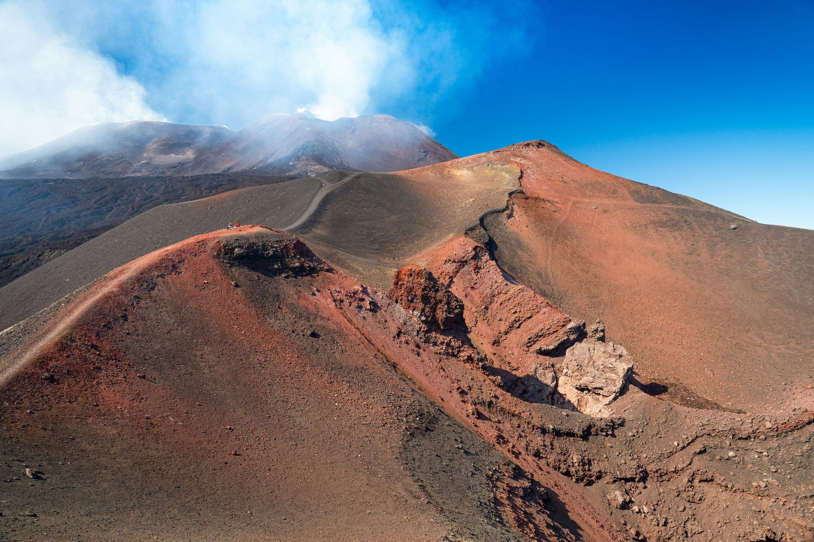

Discover Italy's rich cultural and natural heritage recognized by UNESCO. Explore 58 world heritage sites, from the stunning Amalfi Coast to the historic ruins of Pompeii. Learn about Italy's intangible cultural elements and its active participation in UNESCO's initiatives like Creative Cities and Geoparks.
Scopri il ricco patrimonio culturale e naturale italiano riconosciuto dall'UNESCO. Esplora 58 siti patrimonio dell'umanità, dalla splendida Costiera Amalfitana alle storiche rovine di Pompei. Approfondisci gli elementi culturali immateriali italiani e la partecipazione attiva del paese nelle iniziative UNESCO come le Città Creative e i Geoparchi.
L'Italia è una terra ricca di tesori culturali e naturali, riconosciuti in tutto il mondo per la loro straordinaria bellezza e importanza. Grazie alla Convenzione dell'UNESCO del 1972, il nostro paese ha il privilegio di ospitare il maggior numero di siti patrimonio dell'umanità al mondo, ben 58!
Tra questi siti, troviamo meraviglie naturali come le Isole Eolie e il Monte Etna, ma anche paesaggi culturali unici come la Costiera Amalfitana e la Val d'Orcia. Ogni luogo racconta una storia millenaria e rappresenta un patrimonio da preservare e valorizzare.

Ma l'Italia non si ferma qui! Il nostro paese è anche protagonista nel Patrimonio Culturale Immateriale, con 15 elementi iscritti nella lista dell'UNESCO. Dalle antiche tradizioni artigianali alle feste popolari, la nostra cultura si tramanda di generazione in generazione.
Inoltre, l'Italia è parte attiva in molte iniziative UNESCO, come le Città Creative, dove città come Bologna per la musica e Roma per il cinema si impegnano a promuovere la creatività e lo sviluppo sostenibile.

Infine, le Scuole Associate all'UNESCO e i Geoparchi dimostrano l'impegno dell'Italia nell'educare alle sfide globali e nel proteggere l'ambiente.
Scopri di più sul patrimonio culturale italiano e unisciti a noi nel preservare e promuovere la nostra straordinaria eredità!
fonte: L'Italia e l'UNESCO
Parole chiave
| Patrimonio | Il patrimonio sono i beni culturali e naturali di un paese. |
| Culturale | Relativo alla cultura di un luogo o di una società. |
| Naturale | Relativo alla natura, come montagne, mari, e foreste. |
| UNESCO | Organizzazione internazionale che promuove la cultura e l'educazione. |
| Sito | Un luogo particolare di interesse, come un monumento o una rovina. |
| Bellezza | Qualità estetica piacevole da guardare. |
| Tradizione | Pratiche e costumi tramandati di generazione in generazione. |
| Pratica | Azioni o attività svolte abitualmente. |
| Artistico | Relativo all'arte o agli artisti. |
| Industrie | Settori economici che producono beni o servizi. |
| Fruizione | L'atto di godere o utilizzare qualcosa. |
| Sensibilizzare | Far prendere coscienza o interesse su un argomento. |
| Globalizzazione | L'aumento dell'interconnessione tra paesi e culture. |
| Diversità | Variazione o differenza tra persone o cose. |
| Risorse | Beni materiali o immateriali che possono essere utilizzati. |
| Città | Un'area urbanizzata, più grande di un villaggio. |
| Cooperazione | L'azione di lavorare insieme per raggiungere un obiettivo comune. |
| Strategico | Importante o essenziale per il successo di un'attività. |
| Rete | Un gruppo di persone o organizzazioni collegate tra loro. |
| Musica | Arte sonora prodotta attraverso strumenti o la voce. |
| Letteratura | Opere scritte come libri, poesie, e racconti. |
| Artigianato | Produzione di oggetti a mano, spesso tradizionali. |
| Design | La creazione di prodotti o ambienti con uno stile particolare. |
| Gastronomia | Studio o pratica della preparazione e consumo di cibo. |
| Cinema | Industria e arte della produzione cinematografica. |
| Tramandare | Passare da una generazione all'altra, come conoscenze o tradizioni. |
| Storia | Racconto degli eventi passati. |
| Elementi | Parti o componenti di qualcosa. |
Esercizio
Domande
- Quanti siti italiani Patrimonio Mondiale dall'UNESCO conosci?
- Cosa significa "patrimonio culturale immateriale" secondo l'UNESCO?
- Quali città fanno parte della Rete delle Città Creative dell'UNESCO?
- Qual è l'obiettivo dell'UNESCO?
- Qual è il ruolo delle Scuole Associate all'UNESCO nel sistema educativo?